UI / UX DESIGN · 2025
Anastasia
Anastasia Beauty Salon is a luxury beauty and wellness brand designed to create a refined, calming and premium experience.
Final Product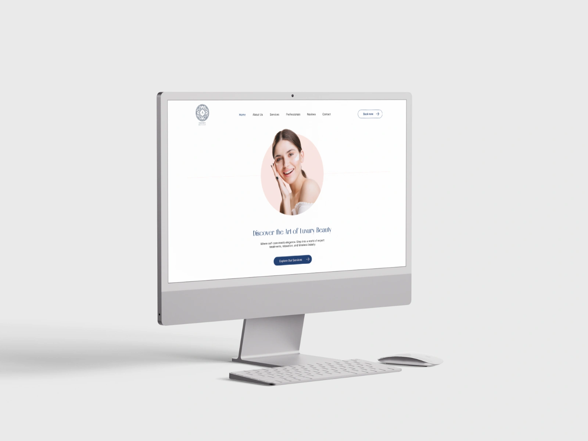
01 — OVERVIEW
Creating a clearer experience.
Anastasia Beauty Salon is a luxury beauty and wellness brand based in Doha, Qatar, designed to feel as refined, calming and premium online as the in-salon experience itself. The visual language being elegant serif headings, soft neutral tones, deep navy blue, and subtle oriental geometric patterns reflects both the salon's sophisticated identity and its Qatari origins.
02 — THE PROBLEM
What problem were we solving?
Beauty and wellness is a crowded and visually-saturated category. Most salon sites either lean generic-corporate (stock photos, busy menus) or so minimal they give the visitor nothing to act on. Anastasia needed to stand apart on feel alone, while still doing the practical job of a service business site: show what's offered, build trust fast, and make booking effortless. The core question driving the design:
How might we design a site that feels as calm and premium as a five-star spa, without losing the clarity a client needs to actually book a treatment?
03 — DESIGN GOALS
Three principles guided the design.
Guide visitors naturally from discovery to booking
Structure the homepage so a visitor moves from discovering the salon, to exploring services, to meeting the professionals, to reading testimonials, to making an appointment, in that order, without friction.
Convert visual appeal into bookings
The Site needed to translate "this looks beautiful" into an actual appointment, not just admiration.
Build trust fast for a multicultural, multilingual clientele
Doha's client base spans English, Arabic, Russian, French and Spanish speakers, so credibility (staff expertise, language support, premium positioning) had to come through immediately.
04 — RESEARCH & DISCOVERY
What did we find out?
- Competitive audit: Reviewed 3 luxury spa/salon and wellness brand sites to separate what reads as premium (restraint, whitespace or considered type) from what reads as generic (busy service grids, stock imagery or cluttered CTAs).
- Stakeholder interviews: Anastasia's team needed the site to reflect their actual differentiators: international, multilingual professionals (Arabic, English, Spanish, Turkish, French, Russian across staff), premium products, personalized care and to support live promotions like the Qatar Airways staff discount and a home-service massage option.
- User needs: A prospective client is usually comparing a handful of salons quickly on a phone. They need to feel the ambiance immediately, scan services and pricing without digging, and reach booking in as few steps as possible.
Clients decided whether a salon felt 'worth it' within the first screen. So hero imagery and pacing had to do more persuasive work than any copy on the page hence a considerable amount of time went into designing a hero section that fits the client's needs.
05 — INFORMATION ARCHITECTURE
Booking User Flow
The booking flow was broken into four short, guided steps rather than one long form, each step asks for a single decision, so the client is never facing more than one choice at a time.
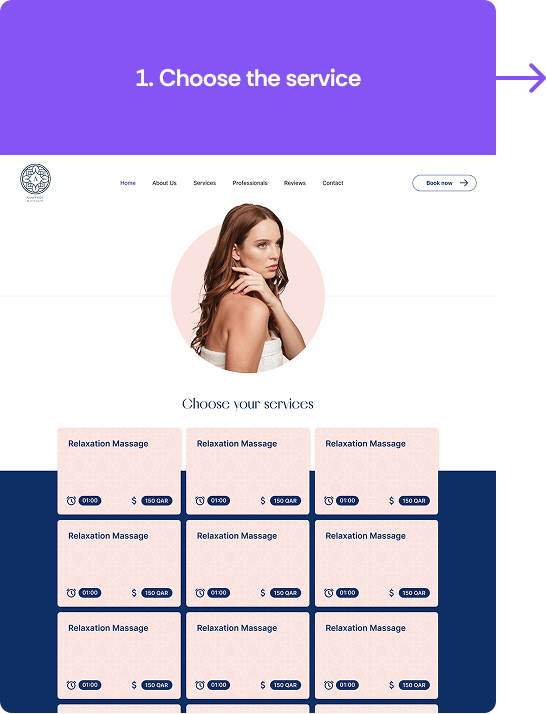
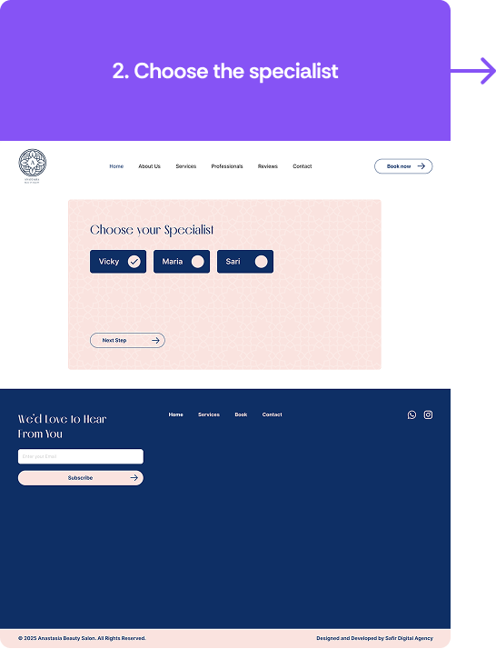
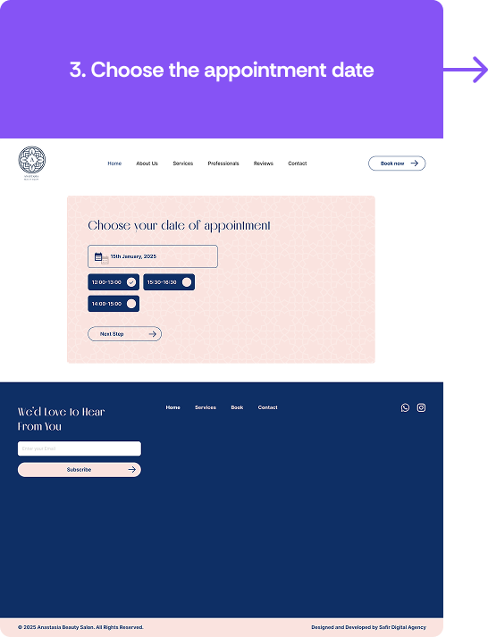
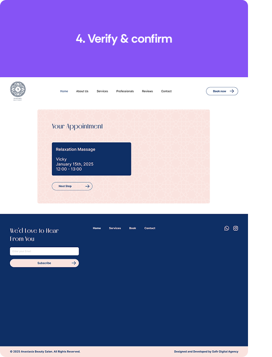
This step-by-step pattern keeps the calm, uncluttered aesthetic intact even at the most transactional part of the site, each screen still has generous whitespace and the same soft blush/navy palette as the rest of the brand, so booking never feels like "leaving" the premium experience to fill out a form.
06 — WIREFRAMES
From structure to interface.
Low-fidelity wireframes were used to explore different layouts and establish the information hierarchy before introducing visual styling.
Some sections of the wireframes were changed in the final product per client's request:
- The Services section of the site was changed from 6 services to 5 services.
- Design of contact us section was also changed quite a bit to reflect client's wishes.
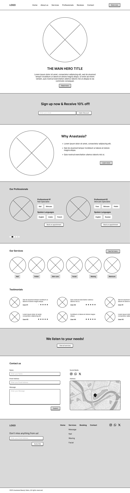
07 — DESIGN SYSTEM
Typography
The System combines elegant serif headings (Melodrama) with clean sans-serif body text (Inter). This pairing creates a clear hierarchy between luxury-oriented messaging and functional content.
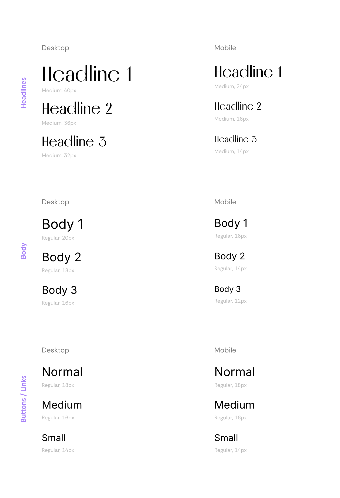
Color system
The Visual Language uses a restrained palette of deep navy blue, blush pink and white to convey and balance luxury, feminity and usability all at the same time.
Blush pink especially helped to convey the feeling of feminity and softness, while the deep navy blue was used to convey luxury and trustworthiness all while the white helped balancing the two color and not letting one overpower the other.
Visual Language
Oriental Pattern was frequently used throughout the project to signify the Qatari origins of the brand and culture of the region.
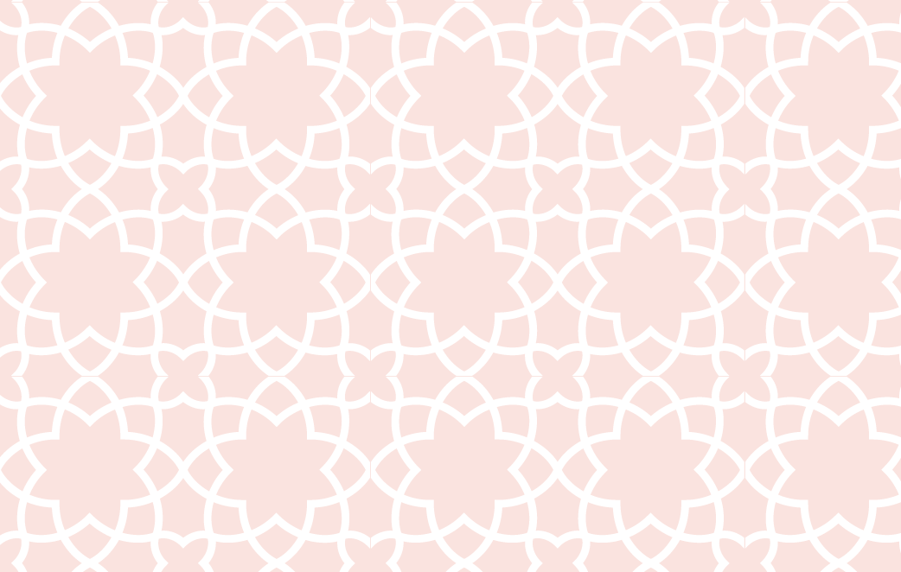
A subtle geometric pattern rather than competing with the content, the low-contrast pattern adds texture and gives the brand a distinctive visual signature.Key Design Decisions
- Multi-step booking over a single form. breaking the booking task into four single-decision screens reduces cognitive load and keeps the premium, unhurried feel intact even during a transactional task.
- Service cards lead with duration and price. letting clients compare options at a glance, matching how they'd actually evaluate a spa menu, without needing to open each service individually.
- Professionals shown with language tags. surfacing which languages each specialist speaks (e.g. Arabic, English, Turkish for Maria; French, English, Russian for Vicky) directly addresses a real trust barrier for Doha's multilingual client base.
08 — FINAL DESIGN
The final experience.
Here is the final complete project. The final product is a premium, calming and luxurious experience that is easy to navigate and book an appointment and left the client satisfied with the final result.
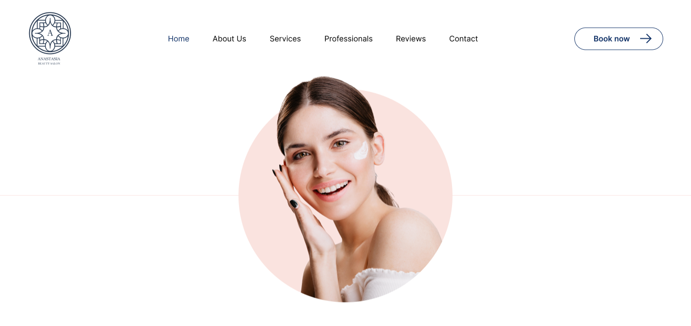
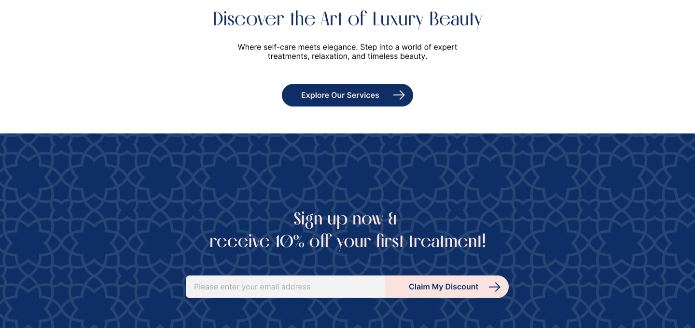
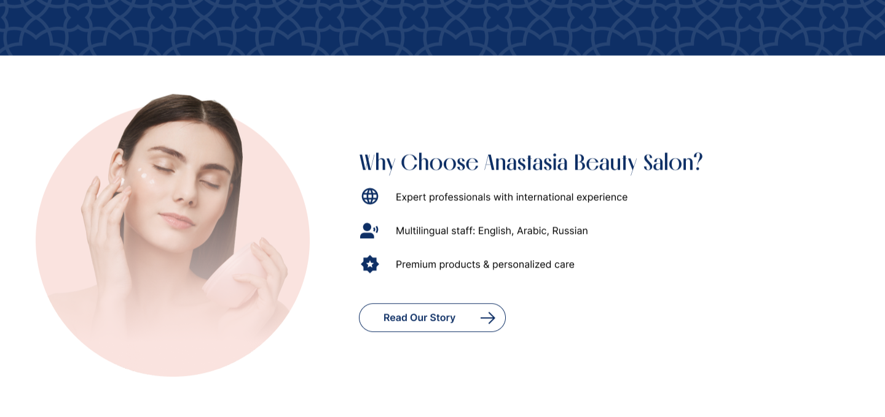
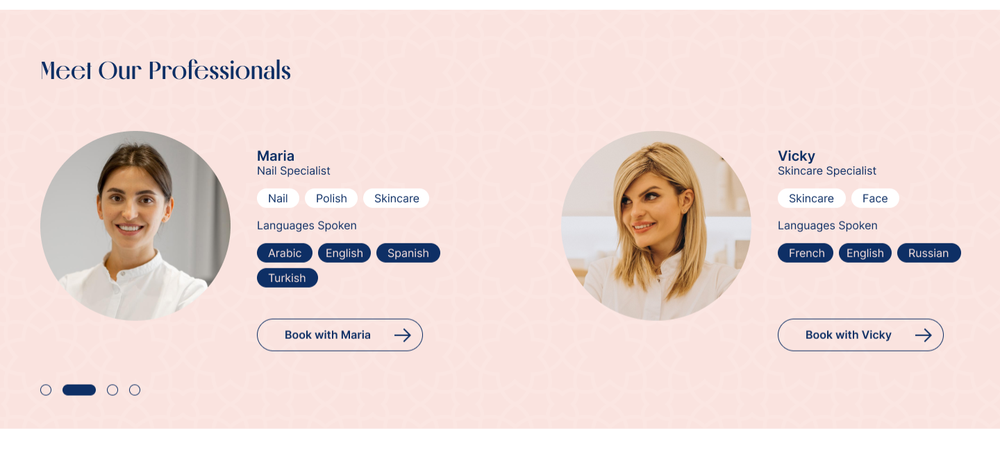
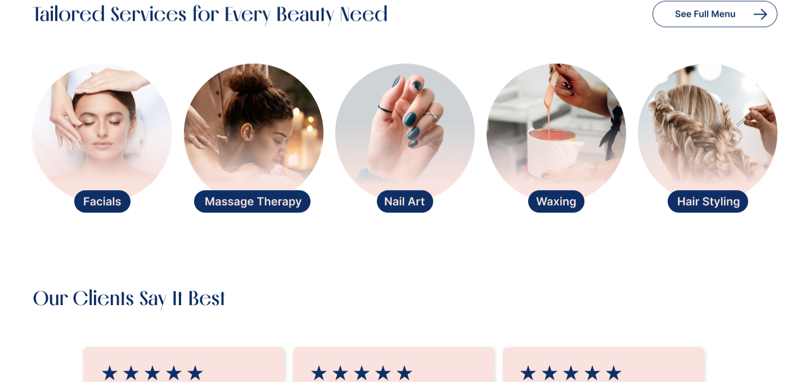
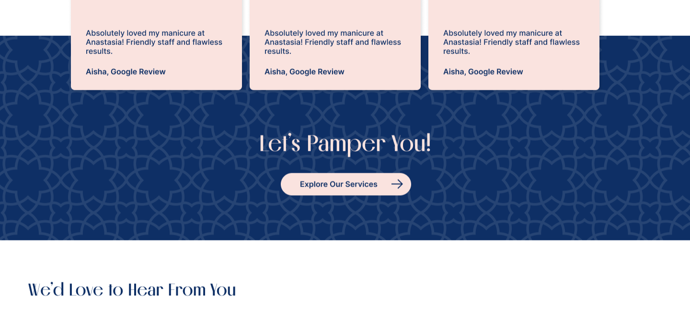
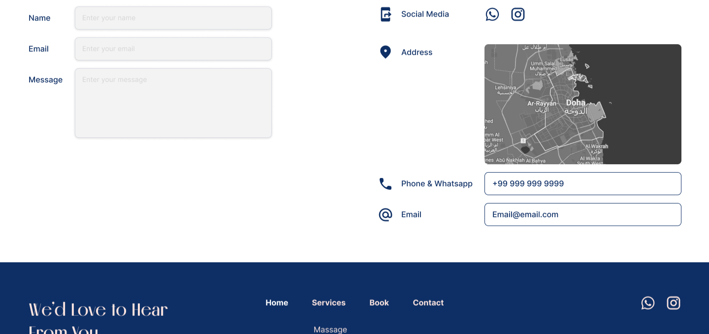
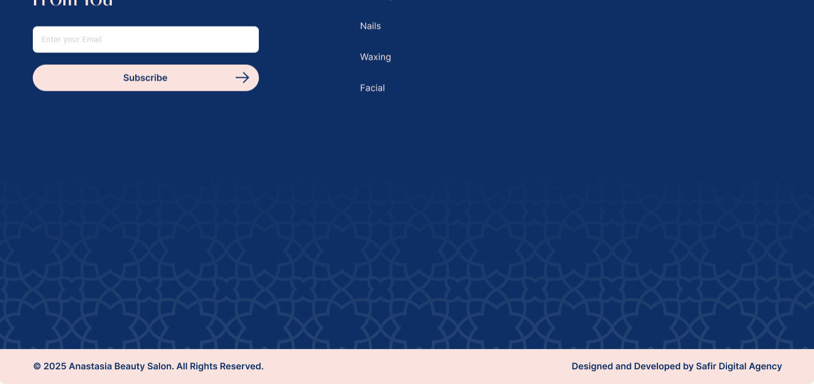